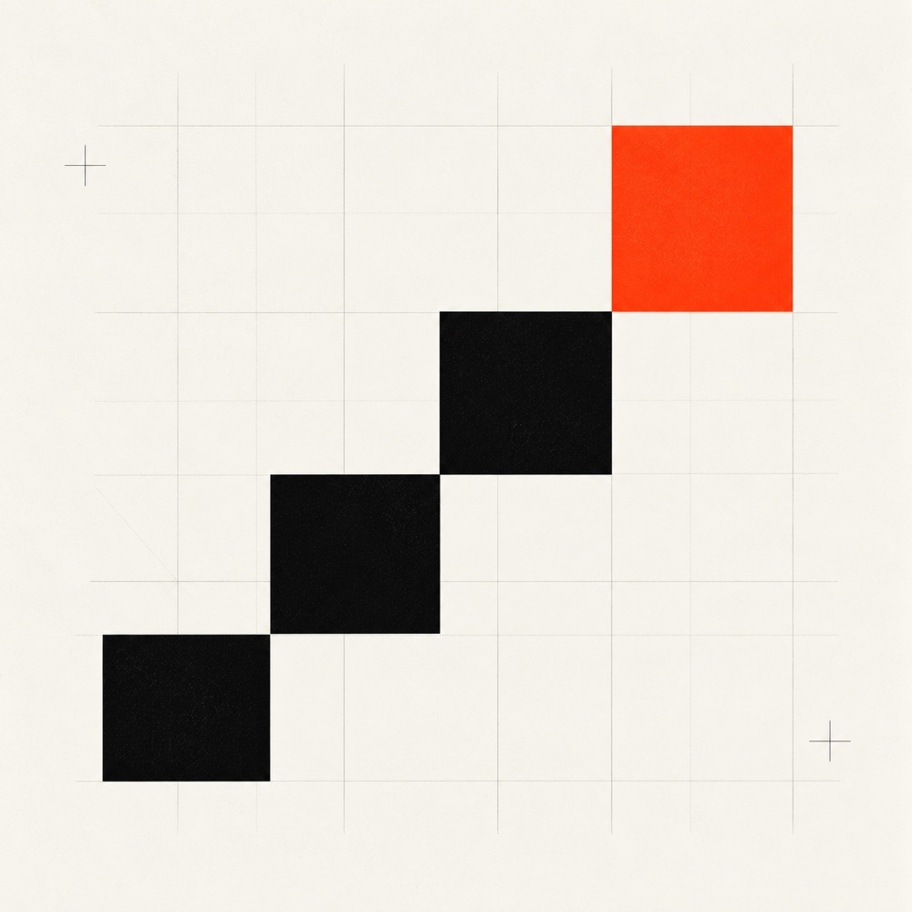

No surprises. No scope creep.
Every project follows the same four phases, from a paid discovery sprint to a live system. Most ship in 4 to 8 weeks. Some longer, some shorter, and we tell you which before you sign.

- Phases
- Discover, Design, Build, Deploy
- Most projects
- 4 to 8 weeks
- Build price
- Fixed, quoted after Design
- After handoff
- 30 days of support included
What, when, how much. Then we build it.
We don't sell "agile discovery" as a billable line item.
We don't promise to "figure it out together over six months." You see the plan, the date and the number before the build starts.
Four phases, each with a clear handover.
-
01 · 1 to 2 weeks · Paid sprint
Discover.
Before we build anything, we have to understand what we're really building.
What happens
- Workflow audit: we shadow the work, not just the slides
- Stakeholder interviews with the people who'd actually use it
- Data review: what's clean, what's not, what's missing
- Honest assessment of what AI shouldn't do here
You give us
- Access to relevant systems (read-only is fine)
- Time from 2 or 3 people who own the workflow
- Sample data; anonymized works for now
You get
- Scoped problem doc with explicit assumptions
- ROI estimate with the math shown
- Build plan or a "don't build this" recommendation
-
02 · 1 to 2 weeks · Fixed quote at end
Design.
Architecture, agent design, integration map. A working prototype. Then a fixed quote.
What happens
- Technical spec: components, data flow, failure modes
- Agent, prompt and tool design, plus an evaluation harness
- Integration map with every system, auth, and webhook
- Live prototype demo on real-ish data
You give us
- Final scope sign-off from the budget owner
- Sandbox or staging environment
- One person designated to unblock fast
You get
- Technical spec doc (the same one we build from)
- Prototype you can poke at
- Fixed-price quote and timeline for build
-
03 · 2 to 6 weeks · Fixed price
Build.
Heads down, weekly demos. Nothing ships that we wouldn't run ourselves.
What happens
- Production-grade development with tests, logs, retries
- Eval suite that runs on every change
- Integration with your real systems
- Security & compliance reviews if needed
Cadence
You get
- Working system in staging by week 2
- Production-ready system at end of build
- Runbook, dashboards, source code, the whole thing
-
04 · Ongoing · Optional retainer
Deploy & iterate.
A live system. A real dashboard. Optional retainer for ongoing optimization.
What happens
- Production rollout, usually phased, never big-bang
- Monitoring, alerting, drift detection
- Refinement based on real usage data
- Handoff or retainer, your call
Retainer covers
- Monitoring & model-update reviews
- Performance tuning & new edge cases
- Pre-allocated build hours for new features
Or hand off
- Full documentation, eval suite, runbook
- Pairing sessions with your team
- 30-day post-handoff support included
A typical timeline, week by week.
Discovery and Design are short on purpose. The weeks go where the work is: the build.
- Discover1 to 2 wk
- Design1 to 2 wk
- Build2 to 6 wk
- DeployOngoing
Let's run the first phase.
A paid discovery sprint pays for itself, even if we conclude you shouldn't build.